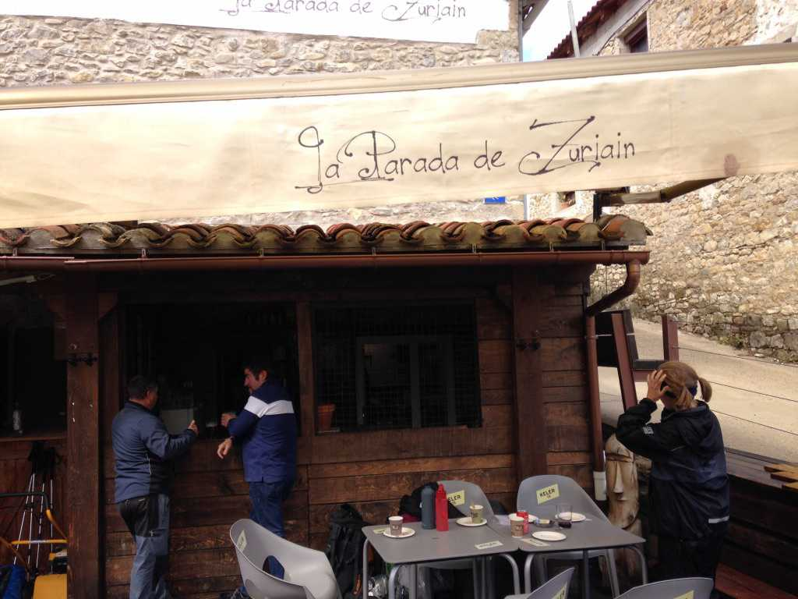
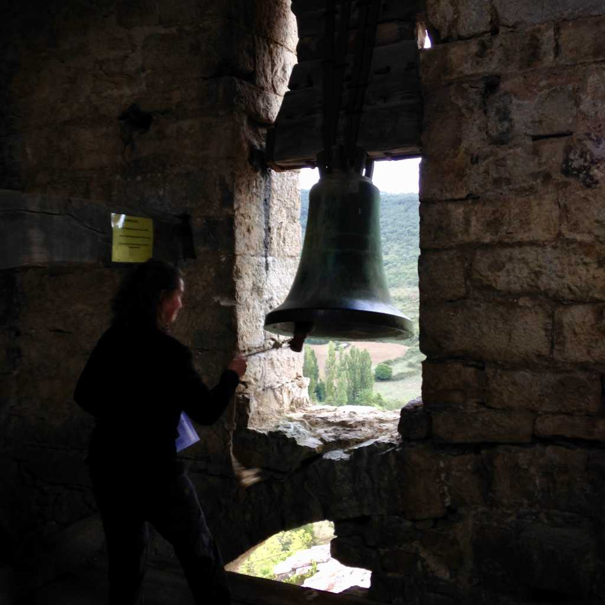

4: Möge die Straße
Another gray and rainy day. We sleep in and start walking at 8am. After the deep and enlightening conversations of yesterday, we decide to walk in solitude –– together but left to the vicinity of our inner worlds.
My feelings throughout the morning are in contrast with the highs of the previous; I am in a blue, melancholic state of mind. Thoughts of the future, about something out of reach. What if I return unchanged? What if the Camino turns out to be a waste of time?
I’m annoyed at myself for having these thoughts, though I don’t push them away. I try to listen and see them as they are – thoughts with no actual bearing on reality, despite how real they feel in the moment. Acknowledged, their presence simply fades, and I am able to resume my walk.
After 2 hours of trekking, we stop at a small cafe and break our vow of silence. And lucky us! The solitude has given us time to generate new and creative insights, while the distance fueled a burning desire for each other’s company. It was like we were seeing old friends again after years of prolonged separation, and we enjoy each minute as if they were our last.

We continue our walk, though without much of the silence. I walk with Matilde this time while Franca and Marieke are a few paces ahead of us. Something seems to be on Matilde’s mind, so I inquire.
Matilde has just graduated from high school and is taking the year off before planning to apply to university. This is her first time being away from home. At the bus station in Bayonne, right before she and Franca had met me, she had a mental breakdown, understandably so. Not only was she adjusting to the fact that she was far from home, she was also about to walk across a completely unknown, unfamiliar country. But she understands that what she is experiencing is just a small part of growing up. It may even be all of it - constantly facing the unknown. She knows she will be fine, especially with good company.
We transition and begin talking about a variety of topics: destiny, fate, family, love, and books. I’m thrilled to discover that Matilde is also a voracious bibliophile. We’re baffled to learn that the wonderful novel, Cloud Atlas, is a shared favorite. Most people have heard of and seen the movie, but it was much less likely that they have read the book. The prose is lucid but dense. What are the odds of meeting someone on the Camino who has actually read the book? Is there a reason behind the sudden entwinement of our universes, like that of the six protagonists of Cloud Atlas?
Before meeting, Matilde thought my name was Timothy: “You just looked like a Timothy, so Franca and I decided to call you Timothy.” I flipped out because my Dad’s name is Timothy.
We could have dismissed these moments as a series of mere coincidences. But we didn’t. Where’s the fun in that? We, as humans, have the power to write our own narratives through the meaning we give to our shared experiences. We are both the playwrights and the actors.
So here’s the script: Etched in the starry cosmos was the eventual convergence of two seemingly disparate universes, that of Matilde and Phil, on the 10th day of a gray and rainy September in the year of 2017 on the Camino de Santiago.
We end our walk at a quiet donation-based albergue some few kilometers away from the city of Pamplona. The albergue has a calm and inviting atmosphere. On the walls are colorful plates and pictures, paintings of pilgrims, various cultural articles. My favorite is a poster with the word love transcribed in multiple languages, likely written by past pilgrims who had also found refuge in this albergue.
After unpacking and cleaning myself up, I go downstairs and into the kitchen and meet a pilgrim named Maria. She’s from Oregon and has recently retired from working as a speech therapist and professor. To celebrate she decided to walk the Camino. We start talking and I tell her I’m searching for direction, that I feel quite lost and unsure of what I want in life. She listens attentively and makes room for me to vent my thoughts. When I finish, she smiles and reassures me the way a loving mother does.
“Don’t worry. You’ll figure it out as you go. Everyone walks their own path. You need to be practical, yes, but you also need to listen to your heart. That’s why you’re here now. Just keep walking and listen to what it says.”
Later in the evening, the girls and I go inside the church behind our albergue and ring the infamous bell at the top of its tower. It is the only bell allowed to be rung by pilgrims on the Camino. Afterwards we go downstairs, and I notice a small shrine covered with green sticky notes surrounding an effigy of Jesus. On them are the writings of many past pilgrims, mostly notes of gratitude. Matilde, Franca, Marieke, and I add our own to the collection.
Later that night, we share a dinner with the others – more pasta, salad, wine. Once we finish, we go into the church again for a short reflection lead by the nuns who run and maintain the albergue. We sit in a small circle, and each of us shares who we are and, voluntarily, why we are walking the Camino.
There’s a man walking with his young son, James, the young woman to my left is searching for a new source of meaning, and Maria is walking in celebration of her long and rich life. I consider the question and give my own answer.
To end the night, Matilde and Franca are asked to sing a song. They decide to sing an Irish blessing song, Möge die Straße, in German. It was something they sang at the end of every school year before departing into the bliss of their summer vacations. The setting is perfect. We have no essence of what adventures, trials, and lessons lay ahead.
Möge die Straße
- May the road rise to meet you
- May the wind be always at your back
- May the sun shine warm upon your face
- The rains fall soft upon your fields
- And until we meet again, until we meet again
- May God hold you in the palm of his hand
- And until we meet again, until we meet again
- May God hold you in the palm of his hand
- May the sun make your days bright
- May the stars illuminate your nights
- May the flowers bloom along your path
- Your house stand firm against the storm
- And until we meet again, until we meet again
- May God hold you in the palm of his hand
- And until we meet again, until we meet again
- May God hold you in the palm of his hand
